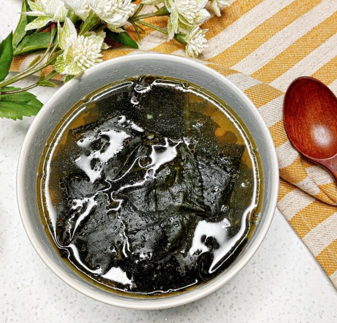

- 초간단 김치찌개
- 콩나물국
- 맑은 미역국
맑은 미역국 레시피
가성비 최고! 난이도 최하! 초간단 미역국!
재료비 300원으로 증말 간단한 미역국 끓여 봤어요
고기 없이 끓여도 미역국 맛이 나네🤷🏻♂️
미역 본연의 감칠맛을 살려 끓인 맑은 미역국
한 냄비 가득 끓여놓고 두고두고 드셔도 맛있어요

[재료 목록 (4인분 기준)]
- 정수물 약 8과 1/3컵(1.5L)
- 절단 불린 미역 2컵(180g)
- 멸치액젓 2큰술(16g)
- 간 마늘 약 1큰술(18g)
- 국간장 1큰술(10g)/li>
- 맛소금 약 1/3큰술(5g)
[만드는 법]
- 냄비에 정수물, 불린 미역, 국간장, 간 마늘, 멸치액젓, 맛소금을 넣고 강불에 끓인다.
* MSG를 함께 넣으면 더욱 감칠맛이 올라온다.
* 건미역 약 1/2컵을 15분 정도 물에 불려 물기를 짜낸 후 사용한다.
- 국이 팔팔 끓으면 약 2~3분 정도 더 끓인 후 불을 끄고 완성한다.
* 미역국은 여러 번 다시 끓여 먹으면 더욱 깊은 맛이 난다.
※ 기호에 따라 다른 채소를 넣거나, 물의 양을 조절해 자신만의 레시피를 만들어 보세요!
<출처 : 300원으로 한 냄비 가~득 국 끓이기! 가성비 끝판왕 맑은 미역국>